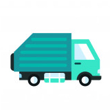

Enables waste management companies to see an entire overview of operations and plan the
most
effective collection routes based on demand.
Waste Logistics
Monitor your trash and recycling generation, proactively manage your services,
increase
your sustainability, and only pay for the pick-ups you need (that means big savings)
Helps customers cut costs by reducing the number of waste trucks needed on the road and
time drivers spend on collection routes.

Services
Our waste solutions begin with our one-of-a-kind sensors, monitoring your
dumpsters’ fill levels, allowing you to only pay for the pick-ups you need.
We provide the tech while our trusted hauling partners carry out our clients’ daily
waste collections.
We provide the tech while our trusted hauling partners carry out our clients’ daily
waste collections.